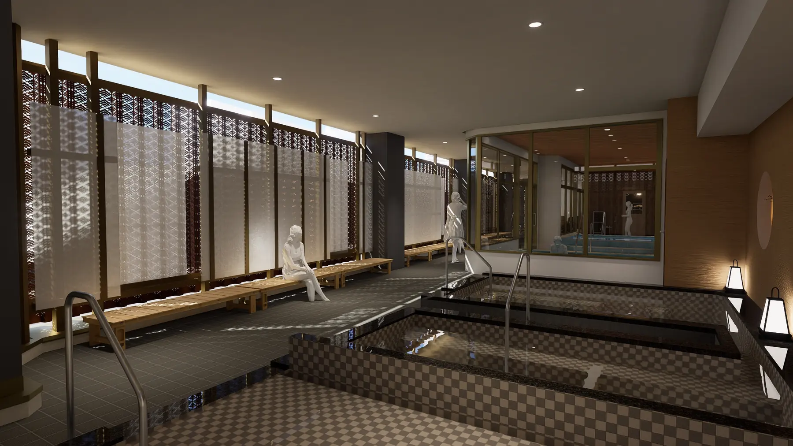
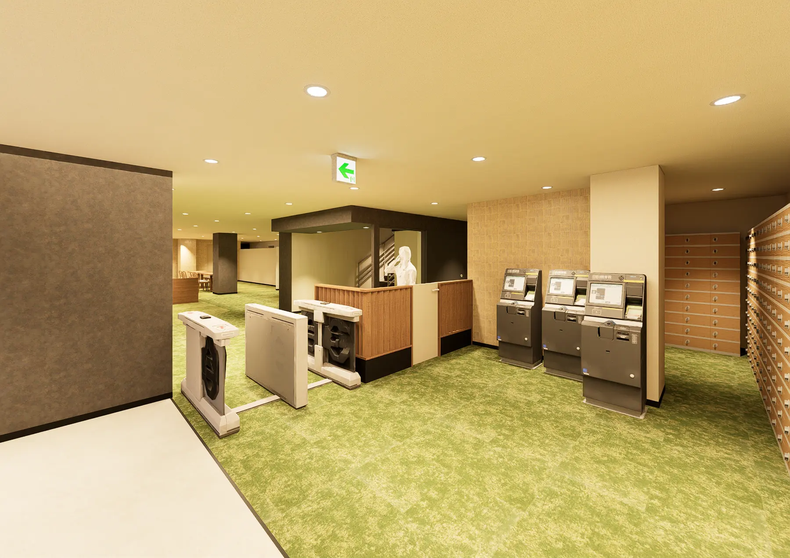

Miss the last
train.
- Weekdays
- ¥3,300
- Fri, Sat, holiday eve
- ¥3,800
- Check in
- 15:00
- Check out
- 10:00
Stay the night and take a bath in the morning before you leave. Booking required, one bed per person. Bedding, loungewear, towels and amenities are included, and so is the bath.
What comes with the bed
BeddingMattress, pillow, sheets
Loungewear and towelsIncluded
AmenitiesToothbrush, comb, razor
LuggageLockers
Large bags can be left at the front desk.
Morning bathUntil 9:30
You can bathe after checking out of the bed.
ReceiptsYes
Ask at the desk if you need a company name on it.
Several nightsPossible
A night here


Images for illustration, not photographs of this building.


Questions
- Is it noisy?
- Each capsule is partitioned. Earplugs are available.
- Can I bathe after check-out?
- Yes, until 9:30. Many guests do.
- Is it safe for women travelling alone?
- Baths are separated by gender, and the sleeping area is arranged so you can rest without worry.
- Can I bring a child?
- Up to two children of primary-school age or younger may share with an adult.
- Do I need to book?
- Yes for a bed. The day bath needs no booking.
- Tattoos?
- Covered with our stickers: up to three, ¥220 each. Please check before you travel.